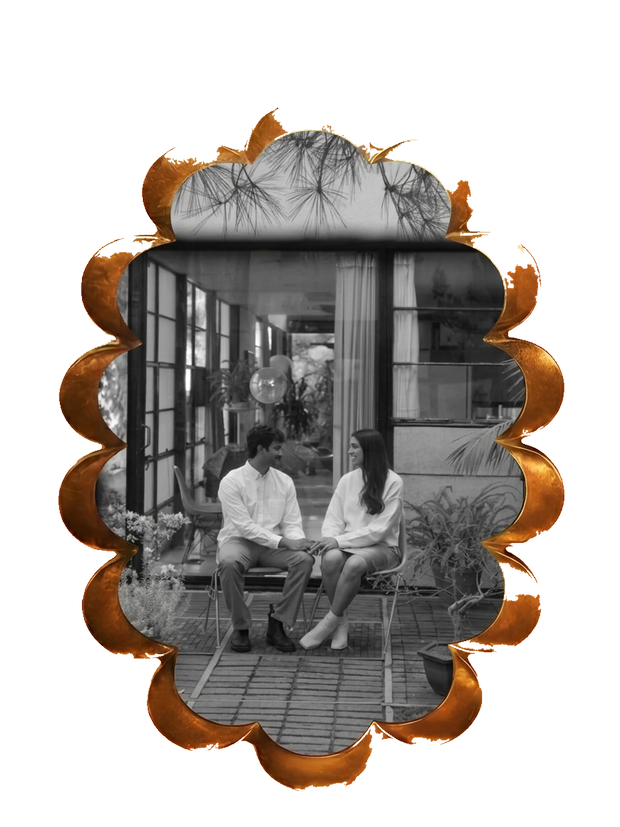

We're getting married in Mexico City!
We'd love for you to join us for a weekend of family, friends, good food, and celebration.
Friday, February 19 – Sunday, February 21, 2027
Mexico City, Mexico

Friday, February 19 · 5–9 PM · Indoor + outdoor
Join us for an evening of drinks, dinner, and a warm welcome to Mexico City.
Saturday, February 20 · 10 AM–3 PM · Outdoor
A daytime celebration with our families, including the Saatak ceremony, Haldi, food, and plenty of color.
Sunday, February 21 · 10 AM–2:30 PM · Indoor
The main event! Join us for the Baarat, wedding ceremony, and celebration.
Sunday, February 21 · 7 PM–late · Indoor
Join us for an evening of music, drinks, and dancing.
We'll be staying at Andaz Mexico City Condesa, in the heart of Condesa. We have a room block available here: [Hotel block]
Our room block rate is available for three days before and three days after the wedding, so we'd love for you to extend your stay and explore Mexico City if you have the time.
We'll also be hosting breakfast at Andaz for hotel guests on Saturday, Sunday, and Monday mornings.
Please fly into MEX (Mexico City International Airport). MEX is approximately 30–40 minutes from the hotel, depending on traffic. NLU is considerably farther and can take around 1.5 hours, so MEX is the more convenient option for the wedding weekend.
If you're arriving from the U.S., make sure your passport meets Mexico's current entry requirements. International guests should check visa and entry requirements based on their nationality before booking travel.
Once you're in Mexico City, Uber is generally the easiest way to get around. You can also arrange transportation through your hotel.
All wedding transportation will leave from Andaz Condesa.
If you choose to stay elsewhere, we recommend staying within easy walking distance of Andaz so you can easily access the wedding shuttles.
Mexico City is one of our favorite cities, and we hope you'll have some time to experience it beyond the wedding.
Condesa — leafy streets, restaurants, coffee, bars, and beautiful architecture.
Roma Norte — galleries, design shops, restaurants, and a lively neighborhood feel.
Polanco — museums, shopping, restaurants, and some of the city's best-known cultural attractions.
There won't be much free daytime during the wedding festivities, but Saturday evening after the Haldi is free, and Monday is a great day to explore if you're staying an extra night.
February is typically dry and warm during the day, with cooler evenings. Expect afternoons to have a high of 75 and evenings to be cool around 60.
Mexico City sits at a high elevation, so you may notice the altitude when you first arrive. Take it easy on your first day, drink electrolytes, wear sunscreen, and give yourself some time to adjust.
The local currency is the Mexican peso. Credit cards are widely accepted, but it's useful to have some pesos for smaller shops, markets, and tips. ATMs are widely available, though we recommend using ATMs located inside banks or other secure locations.
Bottled water is recommended for drinking. Bottled water is readily available at hotels, restaurants, and shops.
We recommend Uber or hotel-arranged transportation rather than hailing taxis on the street. When using a rideshare, always confirm the vehicle and license plate before getting in.
Condesa, Roma Norte, and Polanco are popular areas for visitors, but as in any major city, keep an eye on your belongings and use extra caution when walking around late at night. We recommend traveling with others and using a rideshare after dark.
We've reserved seats for the people listed on each invitation. Because we're working with a limited guest count, we aren't able to accommodate additional guests right now. If you have a specific situation you'd like to discuss, please reach out to us.
Andaz king rooms accommodate 2 guests, while rooms with two beds accommodate 3 guests. Rollaway beds may also be available upon request.
Absolutely. We just ask that you stay within easy walking distance of Andaz, since all wedding transportation will depart from there.
Yes, but please keep a few things in mind. Make sure it's within easy walking distance of Andaz and confirm that it has air conditioning. Many Mexico City accommodations do not have AC.
You can absolutely wear something from your own wardrobe. For the wedding, think formal and festive. If you'd like to wear Indian clothing but aren't sure what to choose, we're happy to help!
No. The Welcome Party and Haldi will have outdoor portions, while the wedding and After Party will be indoors.
We recommend comfortable shoes and bringing a light layer for the evening.
There will be some walking and standing throughout the weekend, so comfortable shoes are a good idea. For the Haldi and Saatak events especially, choose shoes that are comfortable for walking, and over grass.
Absolutely. We'd love for you to turn the wedding into a longer Mexico City trip. Our hotel block rate is available for three days before and after the wedding.
Flights and hotels are the main things to book early, particularly if you'd like to stay at Andaz or extend your trip.
Make sure your passport is valid for your trip, check Mexico's entry requirements based on your nationality, and give yourself plenty of time at the airport.
We also recommend having a backup copy of your passport and important travel information, keeping your phone charged, and letting your bank know you'll be traveling internationally if required by your bank.
If you're coming from outside the U.S., please check the Mexican government's current entry requirements for your country before traveling.